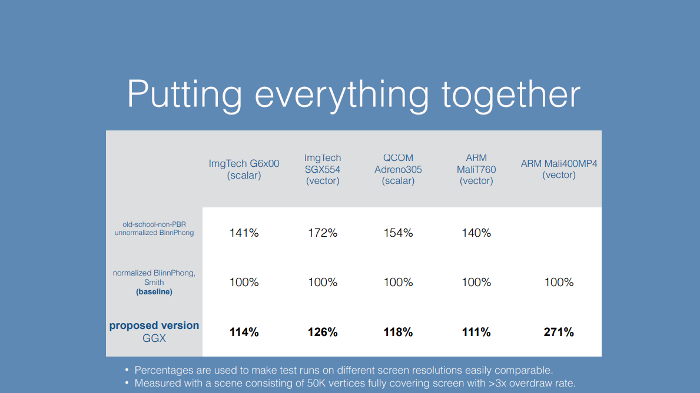

综述
- 在移动端PBR的挑战
- 我们优化了哪些硬件
- 更快的BRDF
- Linear/Gamma
- 环境光反射
PBR challenges on Mobile
- 表现
- 很多GPU，架构，特点
- 线性/gamma的工作流
- 缺少高质量贴图压缩格式
- Shader编译不如PC
- Scalar 和 vector 管线
- texCUBElod
- FP32 FP16
- 大量shader变体
优化目标

表现

市场份额

优化等级

对于PBR重要的GPU特性
- 数学逻辑（ALU）和纹理获取（TEX）之间的比例
- Scalar 和 vector 结构

- FP16
- PBS 更容易出现失真@低精度
- 检查小数（1e-4 OK, 1e-5 not）
- 有时由于精度溢出需要额外的clamp
- Vector 管线可能需要不同的优化方式
- 高端和低端 GPU 的 ALU/TEX 差异很大
High-end等级的优化

为移动端优化BRDF
GGX vs BlinnPhong
- GGX - 更加简单的操作（ADD,MUL）但只用了一个复杂运算器（RCP）
- 标准化的Phong - x相同复杂的操作（RCP,EXP,LOG）
- SG相似（RCP,EXP）
$$GGX = \frac{roughness^4}{\pi((N·H)^2(roughness^4-1)+1)^2}$$
$$Phong = \frac{1}{\pi·roughness^4}·（N·H）^{(\frac{2}{roughness^4}-2)}$$
Simple vs Complex op
- PowerVR G6x00 asm(Phong example)
- 可以做很多ops/cycle，但只有 1 个Complex操作
- 大部分其他结构的complex 操作 = Latency
Geometric/Visbility term
Fresnel term
- C.Schuler提出的拟合：
$$F = \frac{specColor}{L·H}$$
- 适合电解质（反射系数：0.02~0.15）
- 导体（又称金属）- 平均值OK（反射系数 0.7~1.0）
- 用 + 无穷 替代 1
不使用直接使用Schuler假设 只是 specColor 可以后乘的灵感（更适合Scalar 管线）
V*F together
- 修改后的KSK和Schlick Fresnel依赖于L·H
- 融合在一起后：
$$V·F = \frac{(1-L·H)^5}{(L·H)^2(1-roughness^2)+roughness^2}$$
近似 V*F
- 不是代数简化
- 拟合相似曲线
$$V·F_{approx} = \frac{1}{(L·H)^2·(roughness + 0.5)}·specColor$$
近似结果
近似 V*F
适合电介质，但在金属显得发散
可以通过更多的操作来改进，但在实践中无关紧要
Comparison of Visibility Terms
Final Specular BRDF
$$BRDF_{spec} = \frac{roughness^4}{4\pi((N·H)^2(roughness^4-1)+1)^2(L·H)^2(roughness+0.5)} specColor$$
- 只有一个除法
- 适合Scalar 管线
环境光BRDF
只是改装了更简单的功能
$$BRDF_{env}=(1-max(roughness,N·V))^3 + specColor$$

Mid 等级的优化
逐顶点光照
- 中端硬件：
- 低带宽，GFLOPS are meh
- Diffuse and ambient per-vertex
- Specular per-pixel
- Environment reflection vector per-vertex
- 高光在切线空间 - 节约矩阵变换
Low级别的优化
LUT
- 低端硬件：
- Low ALU/TEX 比例
- 高光强度用LUT
- <N·H，Roughness>
- 记住隐式几何!
- I = BRDF * N*L
- N•H 是余弦 - 高光真的crammed
LUT specular
- 在LUT中存储 1/16强度
- RL 代替在 NH 节约了一组操作
- 展开 LUT /w R*L^4 来获得高光的更多空间
Linear、Gamma
线性光照：
- 更老的GPU上比较难
- 有额外的消耗
Gamma 和 Linear永远看起来不相同，但我们可以尝试做到
- 一致的基础光强度
- 一致的高光尺寸
破解 Gamma 以匹配 Linear
假设 gamma with 2.0
仅修复高光强度：
保持线性方程镜面部分的参数（粗糙度）
在线性空间中评估镜面反射强度
在应用颜色之前将产生的镜面反射强度转换为 sRGB 空间
= sqrt(specIntensity_Linear) * specColor_sRGB
Gamma Hack 的优点
- 无需uncompress colors/textures from sRGB to Linear
- Roughness is Linear already
- 通常存储在alpha 通道
- 潜在long latency OP（INVSQRT）没有在shader结尾
- 耗时可以被其他操作隐藏
Environment reflections
texCUBElod can be really expensive sometimes
- G6xx0 - high-end mobile GPU!
- optional extension on ES2.0
G6xx0: use dynamic branches to pick 2 closest mips and lerp
texCUBElod
- Lerp 2个极端的mips
- 很丑但很快
- 三种lerp方式：
- hardcoded highest mip#
- middle mip
- 2nd order SH